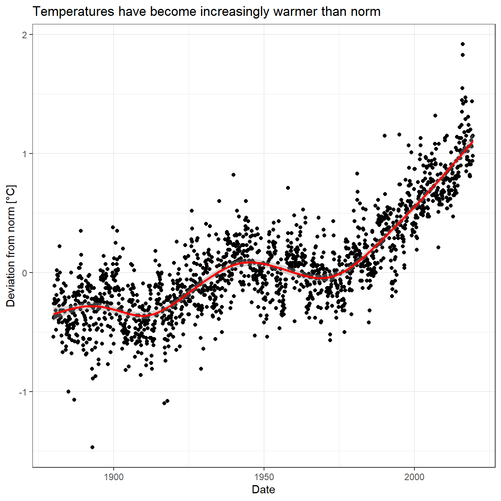
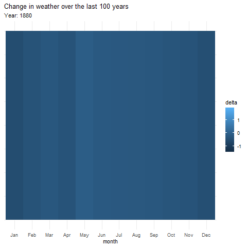
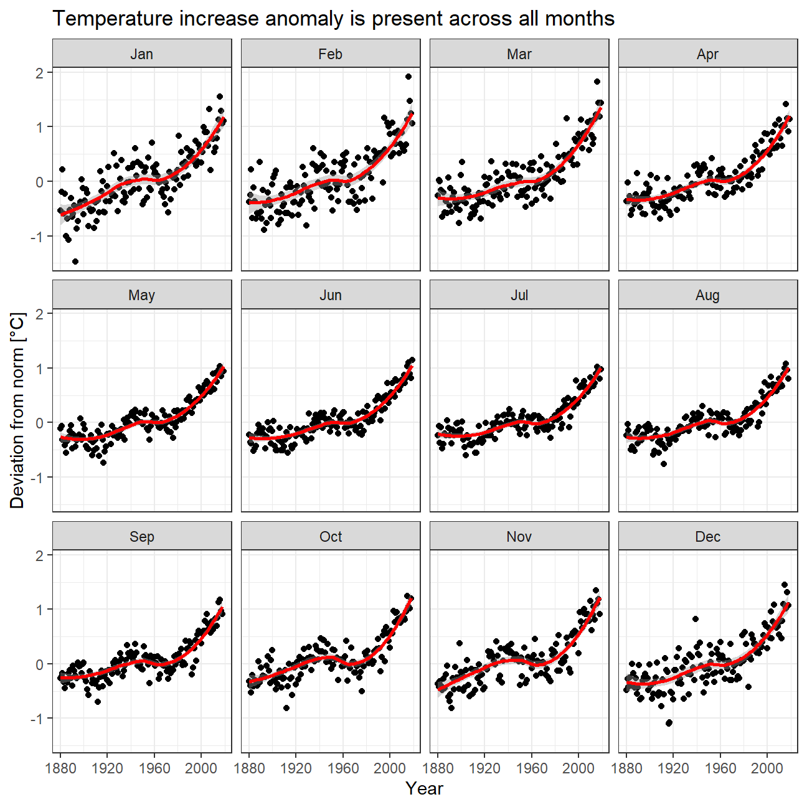
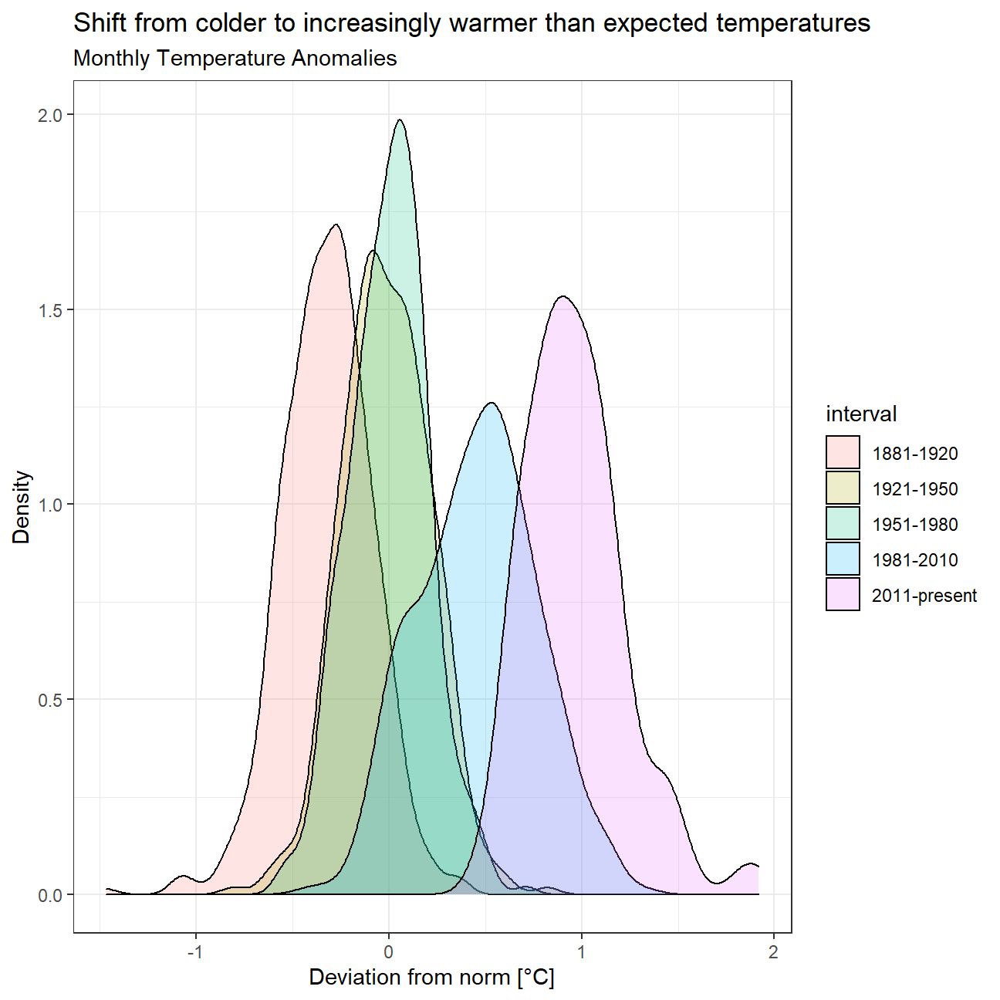
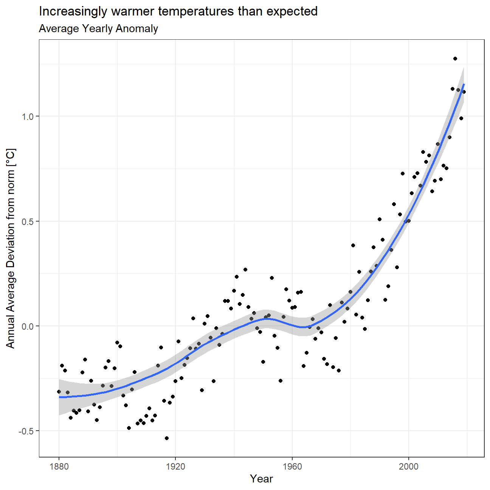

Data: Combined Land-Surface Air and Sea-Surface Water Temperature Anomalies in the Northern Hemisphere at NASA’s Goddard Institute for Space Studies. The tabular data of temperature anomalies can be found here
To define temperature anomalies you need to have a reference, or base, period which NASA clearly states that it is the period between 1951-1980.
Run the code below to load the file:
weather <-
read_csv("https://data.giss.nasa.gov/gistemp/tabledata_v3/NH.Ts+dSST.csv",
skip = 1,
na = "***")Notice that, when using this function, we added two options: skip and na.
The skip=1 option is there as the real data table only starts in Row 2, so we need to skip one row.
na = "***" option informs R how missing observations in the spreadsheet are coded. When looking at the spreadsheet, you can see that missing data is coded as "***". It is best to specify this here, as otherwise some of the data is not recognized as numeric data.
We select the year and the twelve month variables from the weather dataset and convert the dataframe from wide to ‘long’ format, naming new dataframe as tidyweather, and variable containing the name of the month as month, and the temperature deviation values as delta.
weather_cleaned <- weather %>% select(1:13)
tidyweather <- weather_cleaned %>%
pivot_longer(cols=2:13,names_to="month",values_to="delta")Let us plot the data using a time-series scatter plot, and add a trendline. To do that, we first need to create a new variable called date in order to ensure that the delta values are plot chronologically.
tidyweather <- tidyweather %>%
mutate(date = ymd(paste(as.character(Year),month, "1")),
month = month(date, label=TRUE),
year = year(date))
ggplot(tidyweather, aes(x=date, y = delta))+
geom_point(se=FALSE)+
geom_smooth(color="red") +
theme_bw() +
labs (title = "Temperatures have become increasingly warmer than norm", y="Deviation from norm [°C]", x="Date")
I wanted to experiment with animations. In this animation I will visualise the changes of tempature each month, but animatie the progress of time. I expect that the tiles will get lighter as time goes on.
# library(gganimate)
#
# p1 <- tidyweather %>%
# mutate(
# v = 1
# ) %>%
# ggplot(aes(x=month, y=v, fill=delta)) +
# geom_tile() +
# transition_time(Year) +
# labs(title="Change in weather over the last 100 years",
# subtitle = 'Year: {round(frame_time)}') +
# theme_minimal() +
# theme(axis.title.y=element_blank(),
# axis.text.y=element_blank(),
# axis.ticks.y=element_blank())
# anim <- animate(p1, renderer = gifski_renderer(), duration=15)
# anim_save("anim.gif", animation = anim)
Is the effect of increasing temperature more pronounced in some months?

We remove data before 1800 and before using filter. Then, we use the mutate function to create a new variable interval which contains information on which period each observation belongs to. We can assign the different periods using case_when().
comparison <- tidyweather %>%
filter(Year>= 1881) %>% #remove years prior to 1881
#create new variable 'interval', and assign values based on criteria below:
mutate(interval = case_when(
Year %in% c(1881:1920) ~ "1881-1920",
Year %in% c(1921:1950) ~ "1921-1950",
Year %in% c(1951:1980) ~ "1951-1980",
Year %in% c(1981:2010) ~ "1981-2010",
TRUE ~ "2011-present"
))Now that we have the interval variable, we can create a density plot to study the distribution of monthly deviations (delta), grouped by the different time periods we are interested in. Set fill to interval to group and colour the data by different time periods.
ggplot(comparison, aes(x=delta, fill=interval))+
geom_density(alpha=0.2) +
theme_bw() +
labs (
title= "Shift from colder to increasingly warmer than expected temperatures",
subtitle = "Monthly Temperature Anomalies",
x = "Deviation from norm [°C]",
y = "Density" #changing y-axis label to sentence case
)
So far, we have been working with monthly anomalies. However, we might be interested in average annual anomalies. We can do this by using group_by() and summarise(), followed by a scatter plot to display the result.
#creating yearly averages
average_annual_anomaly <- tidyweather %>%
group_by(Year) %>% #grouping data by Year
# creating summaries for mean delta
# use `na.rm=TRUE` to eliminate NA (not available) values
summarise(annual_average_delta = mean(delta, na.rm=TRUE))
#plotting the data:
ggplot(average_annual_anomaly, aes(x=Year, y= annual_average_delta))+
geom_point()+
#Fit the best fit line, using LOESS method
geom_smooth(method="loess") +
#change to theme_bw() to have white background + black frame around plot
theme_bw() +
labs (
title="Increasingly warmer temperatures than expected",
subtitle = "Average Yearly Anomaly",
y = "Annual Average Deviation from norm [°C]") 
deltaNASA points out on their website that a one-degree global change is significant because it takes a vast amount of heat to warm all the oceans, atmosphere, and land by that much. In the past, a one- to two-degree drop was all it took to plunge the Earth into the Little Ice Age.
We construct a confidence interval for the average annual delta since 2011, both using a formula and using a bootstrap simulation.
formula_CI <- comparison %>% filter(interval=="2011-present")%>%
summarise(mean_delta=mean(delta,na.rm=TRUE),
sd_delta=sd(delta,na.rm=TRUE),
count=n(),
se=sd_delta/sqrt(count),
upper_95=mean_delta+1.96*se,
lower_95=mean_delta-1.96*se)
formula_CI## # A tibble: 1 x 6
## mean_delta sd_delta count se upper_95 lower_95
## <dbl> <dbl> <int> <dbl> <dbl> <dbl>
## 1 0.966 0.262 108 0.0252 1.02 0.916library (infer)
boot_delta <-comparison %>% filter(interval=="2011-present") %>%
specify(response=delta) %>%
generate (reps=100,type="bootstrap") %>%
calculate(stat="mean")
percentile_ci <- boot_delta %>% get_confidence_interval(level=0.95,type="percentile")
percentile_ci## # A tibble: 1 x 2
## lower_ci upper_ci
## <dbl> <dbl>
## 1 0.920 1.01By looking at the weather annual anomalies graph and the annual anomalies graph faceted by month, we can see a upward trend of delta. Despite there were some cycles and downward trend before 1970s, the trend line is a positive-slope line, surpassing 1 at present. And then by looking at the density plot, we can see the plots are all normal distribution but there is rightward trend of the plot of different time periods, which demonstrates the increasing trend of the mean of delta. Lastly, when we calculate the confidence interval for average annual delta since 2011, we are 95% confident that the average annual delta falls within the range between 0.922 and 1.01. Based on those fildings, we can conclude that the temperature deviation(delta)is greater than 0, thus there is evidence of global warming. And the temperature is also likely keeps increasing in the future.